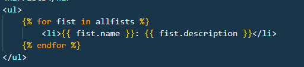
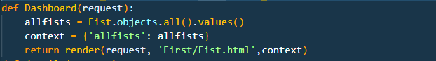
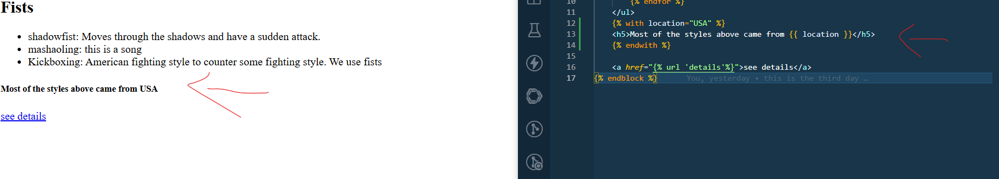
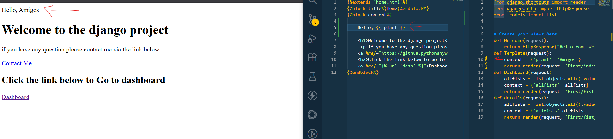

DJANGO SYNTAX
Django variables
Django Template variables
We are going to see the variables in template in views
Step 1
You render variables by putting {{ }}
Example, while rendering the template earlier in display we saw the use of the double calibrase

The name allfist was from the views while the name was from the models. So basically this shows rendering from the views models and template.
Step 2
In the views the allfist was from the context part displayed named fist as you can see below

Step 3
We can render directly from the template using with function. Look at the example below

Step 4
You can also render the variable by writting the variable name in the backend and commiting in the template using another name

Django tags
This include the for loops we had used initially to display the values of a model
Tag references
- autoescape this can decide to display the code symbols e.g {<} for less than in on and the code of it in off
- Using block it block and description e.g block content. this transfer info of child template to parent template
- comment; this is used to addd a comment in the template to show how code uis done
- csrf; this is for cross site request fogery
- cycle; this repeats or set condition of information inputted in the cycle.
- debug; specify debuging conditions
- extends; this takes the parent template to the child template
- filter;This filter before returning it. like trancating words or making word capital letters etc
- firstof; returns values that are not empty or false
- for; this transport values from models or views.
- if; this provides a condition
- ifchanged; checks if the values have changed and writes the value
- includes; use to import template code to parent template
- lorem; inserts randow words example {% lorem 50 w %} w-words, b-blocks, p-paragraphs
- now; adds the date time and instance
{% now "Y-m-d" %}
- H Hour (00-23)
- g Hour (1-12)
- i Minutes (00-59)
- s Seconds (00-59)
- j Day of month (1-31)
- t Number of days in month (28-31)
- l Day of week (Sunday-Saturday)
- D Day of week (Sun-Sat)
- M Month, 3 letters (Jan-Dec)
- F Month, full text (January-December)
- n Month, 1 or 2 digits (1-12)
- Y Year, 4 digits (0001-9999)
- with; create variables in django. just like how we created in template variables
- verbatim; just like autoescape does verbatism this time round stops code excecution and display values how they are in webpage
- Templatetag; The templatetag tag is used to display characters that are normally used to perform Django tasks.
Name Output
openvariable {{
closevariable }}
openblock {%
closeblock %}
openbrace {
closebrace }
opencomment {#
closecomment #}
- spaceless; The spaceless tag is used to remove any space between tags, in the code.
- resetcycle; when cycle is something it resets note: there is closing tag for this like endresetcycle! but it needs the if condition
- regroup ;it returns templates grouped as new list
If tags
look all the condition of if
- == equal to
- != not equal to
- < <= less than and less than or equal to
- > >= greater than and greater than or equal to
- and both condition correct
- or one condition correct
- in. look for item somewhere
- and or use and first then or. it compares the two and values then it compares the or values
- is compare two values if they are completely same. that is from name to id to etc
for loops
condition of for loops
as i first stated for loops can import model data
you can reverse the flow to start from last if we use < reverse >
example {% for x in jim reverse %}
incase the object is empty we can use the empty tag {% empty %}
variables to use
- forloop.counter
- forloop.counter0
- forloop.first
- forloop.last
- forloop.parentloop
- forloop.revcounter
- forloop.revcounter0
include
include function
include is used to add a file. from a html document . one can use with also if they had written something in the code in the included template